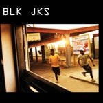
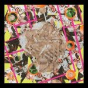
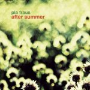
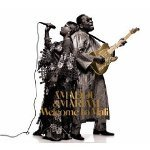
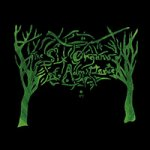
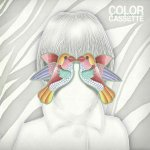

Music Reviews
-

BLK JKS Mystery EP
For a four-song EP, Mystery shows a lot of promise from a group of rhythmic dub-inspired reggae punks originiating in Johannesburg, South Africa.
Kevin Walker gets out his djembe... -

Murcof The Versailles Sessions
Caught between albums three and four, Murcof tests the waters with this experimental set of specially commissioned pieces.
Jody White turns out the lights and locks the doors... -

Wilderness (K)no(W)here
Third album from Baltimore art rock quartet, Wilderness, (K)no(W)here gives away its ending too quickly.
Sean Caldwell reviews... -

Pia Fraus After Summer
Estonia's premier shoegaze band releases its fourth album on Seksound.
David Coleman is intrigued... -

The Soundtrack of Our Lives Communion
They have a name which suggests they're the most vital band on the planet and in the age of single-track downloads, they're releasing a double album. It looks like The Soundtrack of Our Lives are full of ambition with Communion.
Joe Rivers reviews... -

Anni Rossi Afton
Afton, the debut 4AD release from Anni Rossi, establishes the 22 year old Minnesotan as the newest talent in American alternative music.
Miguel Morelli reviews... -

Amadou & Mariam Welcome to Mali
Somehow, the mainstream spotlight was able to breeze over Amadou & Mariam's latest offering Welcome to Mali, which has proved to be one of the liveliest and most indelible albums of last year.
Andy Stewart reviews... -

Little Joy Little Joy
It's official. I don't care if The Strokes ever put out another album.
Brett Oronzio reviews... -

Six Organs of Admittance RTZ
Those of us who aren’t already familiar with the wealth of Six Organs of Admittance rarities collected on RTZ and are getting limited mileage out of Chasny’s recent exercises in finely honed border-psych will find that these patient, meditative, sky-minded nocturnes are just what the witch-doctor ordered.
Tom Whalen returns to zero... -

Color Cassette Forever Sparrow
A boy becomes a sparrow, and it sounds like this.
Sean Caldwell reviews...